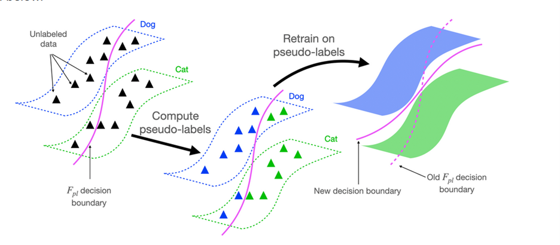
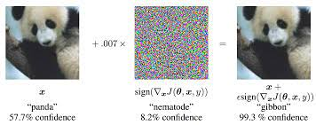

In 1998, Tom Mitchell gave a settling definition of what it means for a computer program to learn with respect to some class of task. It is this simple, the performance of the Machine learning (ML) program on that task must improve with training. For example, in computer vision, the accuracy on task of classifying one object from the other may start as a guess work but improve as the algorithms learns with training. Understanding training methodologies in machine learning is important. In fact, the different ML types are labelled due to their training methods, or how they use some part of their training data. As a result of the deeper connection between ML training methods and ML types, one may get a good grasp of problems that machine learning algorithms solves just by understanding the training paradigms and the challenges that they solve. In this post, I cover three of the training methods in the ML literature. They are Adversarial training, Pre-training, and Self-training.
To begin, to train a machine learning algorithm, especially for data greedy models like deep learning, takes time and a significant amount of computing resources. Additionally, the dataset of interest may come in different variety and shapes. For example, some dataset may have close to none, all, or partially all the information that we want an ML algorithm to learn to predict. This can influence the training paradigms that we choose. Some training paradigms that solve the problem of partial or total lack of labels are Self-training and Adversarial training. Supervised pre-training makes a machine learning model with complex architectures that may be difficult easier to train.
In self-training, we solve the problem of unavailability of the data that we care about. We use pre-existing classifier to produce false labels often referred to as pseudo labels. After this stage, the model can be trained with these pseudo-labels. To illustrate this, in semi-supervised training, we use the part of the dataset which has labels to develop a classifier. This is then used predict the unlabeled dataset before training a model with the complete dataset. 
In the same vein, Adversarial training may help to solve the problem of lack of labels in the dataset. In adversarial training, we introduce ‘intentional examples’ with a different data distribution than the original data in the training dataset. If we have a high-quality model, the model can correctly predict the class of these ‘intentional examples’, and by so doing predict examples also in the true classes. This is referred to in the literature as “virtual adversarial examples.” These can be used as training examples and help to predict the correct label. 
Whereas the two paragraphs above have dealt with the problem of lack of information about the data that we care about, In Supervised Pre-training, we solve a different problem. Supervised pre-training is a form of greedy training strategy, in which we train models on simpler task or architecture before they are trained on difficult or complex ones. The idea is that by training a simpler version of complex tasks or architectures, we can use that simpler version in our original training task. It is often followed by a fine-tuning stage to fine the optimal solution to the original problem. In a related concept to supervised pretraining is FitNets. In this approach we train a teacher that is defined by a simpler architecture and use this teacher to teach a student network that is much more complex.
With training, we can guarantee that a machine learning algorithm will improve to a desired quality. However, we may not always have data to start with. In self-training and adversarial training, this lack or partially availability is handled in a smarter way. When we have data and a model that is too complex, or task is too difficult to optimize, supervised pre-training followed by fine-tuning and teacher and student training models come to our rescue.